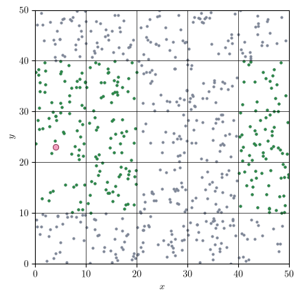
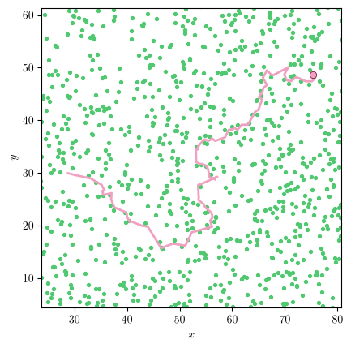

Architecture
pyLEAFS v1 is one resource field and one greedy-forager population, wired so that later layers attach as additions rather than rewrites. Read this before extending it.
Conventions
Dimension lives in the grid. Dimension is a property of the
Grid, set by the length of its shape, and positions are
always (n, D) arrays. There is no separate 2d and 3d codebase; code that
avoids hard-coding D works in both - the energy per resource, for one, is
derived from the homogeneity with D as the exponent (see The model).
Two places do dispatch on D, because the geometry there genuinely differs:
Viewer, since a flat box and a rotatable one are
different matplotlib axes, and heading diffusion in
Population, since a 2d heading rotates by an angle where a 3d
one takes a renormalized tangential kick. Both branch behind a single class
rather than splitting into two.
Arrays, not objects. Resources and agents are stored as parallel NumPy
arrays - a population’s positions are one (n, D) array, its fuel one
(n,) array - which keeps the per-step work vectorizable and
dimension-agnostic, and is the natural target for a later Numba pass.
Plain NumPy for now. The hot loops, per-agent sensing and harvesting, are
ordinary Python so the core can be validated for correctness first. @njit
waits until the physics is pinned.
The grid
Every field and every population references one Grid, which
owns the geometry: the region partition, the toroidal wrap, the minimum-image
displacement, and the Moore-neighbour lookup (\(3^{D}\) neighbours per
region). Defining it once is what lets fields and populations interoperate
without each re-deriving coordinate conventions.
On a \(5 \times 5\) grid, the resources the field finds around one point are the green ones: the point’s own region and its eight neighbours, wrapping across the left edge of the box.
import numpy as np
import matplotlib.pyplot as plt
from pyLEAFS import Simulation, palette
sim = Simulation.forager(seed=0, shape=(5, 5))
grid, field = sim.grid, sim.fields[0]
point = np.array([4.0, 23.0])
disp, _, _ = field.neighbourhood(point)
near = grid.wrap(point + disp)
food = field.positions
fig, ax = plt.subplots()
ax.scatter(food[:, 0], food[:, 1], s=4, color=palette.sensor_slate)
ax.scatter(near[:, 0], near[:, 1], s=4, color=palette.resource_deep)
ax.plot(*point, 'o', color=palette.brain_pink, mec=palette.motor_wine, mew=0.6)
for k in range(1, grid.shape[0]):
ax.axvline(k * grid.L, color='k', lw=0.5)
for k in range(1, grid.shape[1]):
ax.axhline(k * grid.L, color='k', lw=0.5)
ax.set_xlim(0, grid.extent[0])
ax.set_ylim(0, grid.extent[1])
ax.set_aspect('equal')
ax.set_xlabel(r'$x$')
ax.set_ylabel(r'$y$')
plt.show()

The field list
A field is anything spatially distributed that the simulation steps and agents
sample. Field is the structural protocol - step,
sample, deposit - and ResourceField is its only
implementation in v1. Simulation holds a list of fields and
steps each one:
for f in self.fields:
f.step(self.rng)
Any other field - pheromone, chemical, thermal - is a new class satisfying the
protocol and a new entry in that list. The deposit verb is there so that a
pheromone field, which agents write to as well as read, slots in without changing
a call site.
The spatial hash
SpatialHash buckets an arbitrary (n, D) point set into grid
regions and answers neighbourhood queries, agnostic about what the points are.
The resource field keeps its own buffer, but predators sensing prey, agents
sensing each other, and any future point-set interaction can share this one index.
The population list
Populations are likewise a list that the step loop iterates:
for p in self.populations:
p.step(self.fields, self.rng)
v1 has one greedy-forager population, but the loop is written for many. Predators
are a second population whose step consumes the first; a second forager
species is a third. List order is interaction order, which is where
multi-trophic dynamics will be expressed.
Each agent carries a stable id that survives the swap-compaction used when
agents die, so a caller - the viewer’s inspector, a lineage tracker - can follow
one agent across steps.
Here we follow the first agent of a run by its id for 250 steps, drawn over
the field it started on, with a dot where it starts.
import numpy as np
import matplotlib.pyplot as plt
from pyLEAFS import Simulation, palette
sim = Simulation.forager(seed=4)
pop = sim.populations[0]
agent = pop.ids[0]
food = sim.fields[0].positions
path = [pop.pos[0].copy()]
for _ in range(250):
sim.step()
path.append(pop.pos[pop.index_of(agent)].copy())
path = np.array(path)
fig, ax = plt.subplots()
ax.scatter(food[:, 0], food[:, 1], s=8, color=palette.food_green)
ax.plot(path[:, 0], path[:, 1], color=palette.brain_pink, lw=2)
ax.plot(*path[0], 'o', color=palette.brain_pink, mec=palette.motor_wine, mew=0.6)
centre = (path.min(axis=0) + path.max(axis=0)) / 2
half = np.ptp(path, axis=0).max() / 2 + 5
ax.set_xlim(centre[0] - half, centre[0] + half)
ax.set_ylim(centre[1] - half, centre[1] + half)
ax.set_aspect('equal')
ax.set_xlabel(r'$x$')
ax.set_ylabel(r'$y$')
plt.show()

The controller
The map from what an agent senses to how it steers is not yet abstracted: in v1
it is the greedy rule, living in Population.step. The neuroevolution layer
splits it into a Controller: a GreedyController and an
RNNController - an Elman network with an evolvable genome and sensor
array - chosen per population or per agent. Keeping the greedy logic
self-contained makes that extraction a refactor of one method, not a redesign.
Adding a layer
Write a new Field (a pheromone field, say) or a new
Population (predators), reusing the shared Grid and, where
useful, SpatialHash; append it to the simulation’s fields
or populations list; then add a factory, or extend
forager(), to assemble the new world and pin its
behavior with a test. The loops already iterate lists and the geometry already
lives in the grid, so the existing layers do not change.